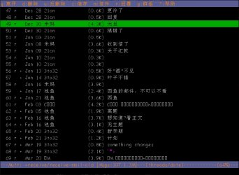
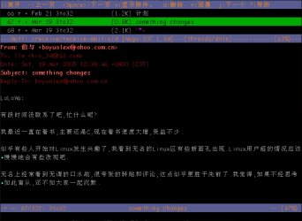

最近更新: 2005-08-22
本页目录
这篇文章很大一部分参考了网路上前辈们的帖子，同时也结合了一点自己的使用经验。希望对大家有所帮助…
这些完全是个人喜好，你也可以用 pine 或是其他的程序来阅读信件，用 sendmail、postfix 来发送信件，或者你干脆直接上 webmail 算了。
当然这是有差别的，对于 mutt 的强大你可以看看王垠主页上关于 mutt 的介绍: Mutt email 程序使用入门。如此强大、个性化的软件，它的配置也是蛮复杂的，这些我们稍后介绍。
而使用 esmtp 的原因，是因为像我们这些发送信件量不是很多的用户，没必要用这个“巨大”的著名麻烦 daemon，没事开个端口在那里 listen。再说像我这样在教育网的用户，用 sendmail 无法向 hotmail 等国外服务器发送信件，但是用 esmtp，我们可以做到，同时还有一定的安全性，还可以感受一下这些典型的 Unix 程序，何乐而不为？
Mutt 只是一个邮件客户端，它只负责从 /var/spool/mail 里读取特定用户的信件，并按照用户安排的方式进行处理。
esmtp 是一个仅仅负责发送邮件的程序，语法和大名鼎鼎的 sendmail 相似，我们在这里用它来代替 sendmail 所扮演的角色。
fetchmail 是一个只负责从 POP3、IMAP 等服务器上收取信件的程序，并把收取到的信件放到 /var/spool/mail 下特定用户的文件里。
Fetchmail 启动后，以daemon 的形式运行（也可以不做 daemon），然后按用户设定的时间到指定的服务器（比如 pop.163.com ）收取用户信件，然后把收到的 信件放到 /var/spool/mail 下特定用户的文件里。
我们用 mutt 来读取由 fetchmail 放在 /var/spool/mail 下的信件，对信件进行浏览、编辑等等处理。处理完后我们把它交给 sendmail 等 MTA （Mail Transfer Agent）来发送信件。
因此， mutt 只是一个帮助用户管理邮件的程序，它本身并不收取、发送邮件。在此我们也可以看到，用户只需要面对 mutt，即可完成所有的收取、阅读、发送的过程，所以我们也说这一系列的过程是以 mutt 为中心的。
Mutt 和 fetchmail 在一般的发行版里都有了，我们只需要下载配置 esmtp。如果是 SLK 的用户，这里有个好消息，royce 兄已经为我们这些 slacker 准备好了现成的 esmtp，地址是 http://download.linuxsir.org/royce/email.tar.gz，不过要注意，若使用这个包，在 .fetchmailrc 中加入 esmtp 时要将地址改为
/usr/local/bin/esmtp
就可以了。其他发行版的用户可以到它的主页上去看看，或许有你要的资源。地址是 http://esmtp.sourceforge.net/，注意 esmtp 还需要 libESMTP 这个库。
Fetchmail 和 esmtp 的配置都蛮简单的，只有 mutt 比较复杂，而且谁也不知道你要把它变成什么样，:)
下面是自己的配置，mutt 和 fetchmail 都是系统自带的，esmtp 用的是 royce 的包，系统是 SLK 10.1。
记得在配置文件的最前面加上默认的 mda，收取多个邮件帐号可以依葫芦画瓢。如果想每次只收取新信件，而不删除旧信，请参照下面收取 163 信箱的格式（需服务器支持）。有关 ~/.fetchmailrc 更多的信息，请 $ man fetchamail。
# sucha's personal .fetchmailrc
# esmtp
defaults
mda "/usr/local/bin/esmtp -f %F %T"
# set daemon fetch per 1.5 min
set daemon 90
# serve 21cn.com
poll pop.21cn.com
proto pop3
username serve-login-name
password password
is local-user-name
# serve 163.com
poll pop3.163.com
proto pop3
uidl
username kio_34
password password
is vc_upset
keep
# another serve
……
……
下面是我的 ~/.esmtprc，如果你有一个以上的帐号，记得使用 identity 这个关 键字。更多的信息，请 $ man esmtprc。
identity kio_34@163.com
hostname = smtp.163.com:25
username = "kio_34"
password = "password"
default
identity someone@google.com
hostname = smtp.google.com:25
username = "username"
password = "password"
mda "/usr/bin/procmail -d %T"
注意: 由于服务器的原因，当你使用 163 或别的的服务器发信时，需修改你的 my_hdr From 信息，将它改成相应服务器的注册用户，否则服务器会当作非注册用户而拒绝发信。
我觉得关于 mutt 的配置，还是先去看看王垠大哥的介绍吧，很多重要且具体的配置他都有很好的说明。下面是我自己的一个简陋的配置文件包，更多、更详细的信息请 $ man muttrc，或者浏览 /usr/doc/mutt 下的文档。
使用方法很简单，如下：
$ mv mutt.tar.gz ~/
$ cd ~/
$ tar xzvf mutt.tar.gz && rm mutt.tar.gz
$ less README (get more information)
注意:
在 mutt 中配置 esmtp 和 fetchmail 还可以看看 AMD-K6 兄主页上的文章，他给出了自己的 mutt 配置，http://slack.linuxsir.org/amdk6/。
共有两张，一张是信件标题列表，一张是信件标题和内容

